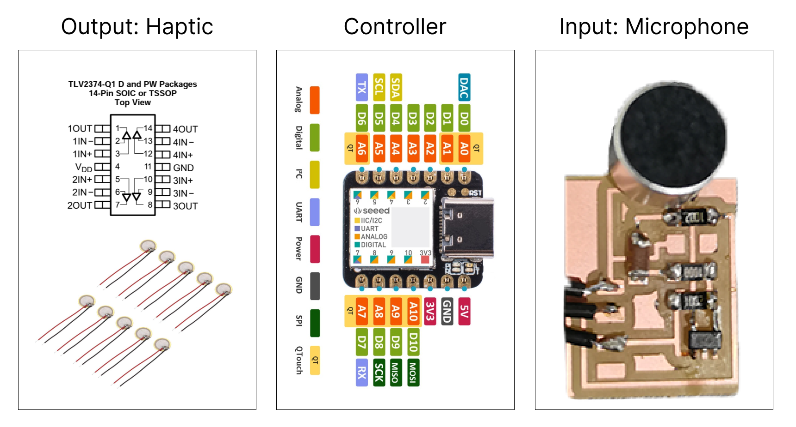
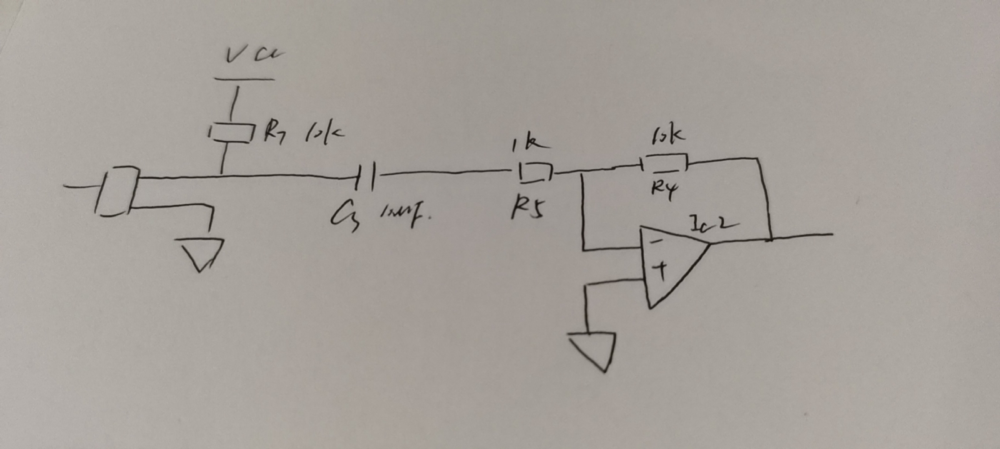
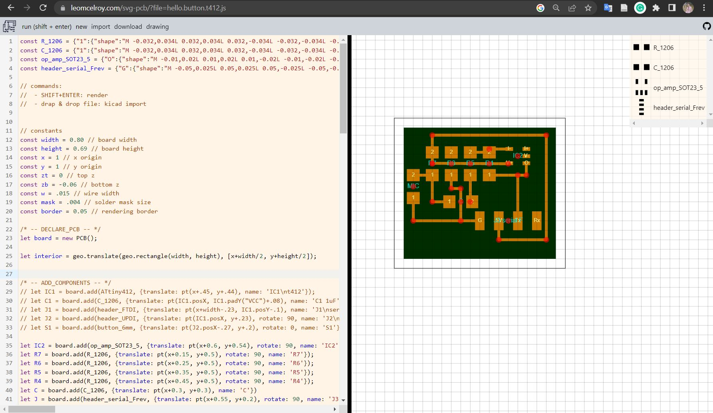
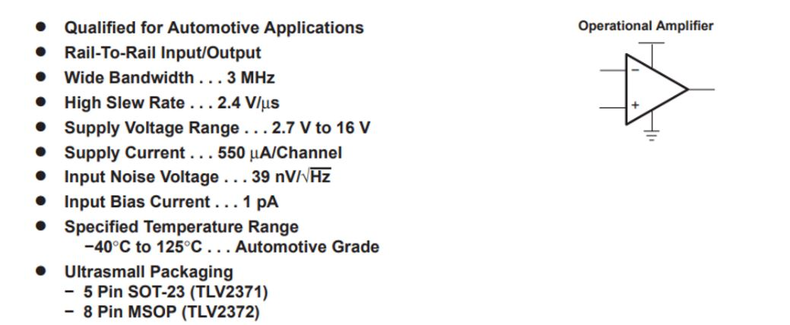
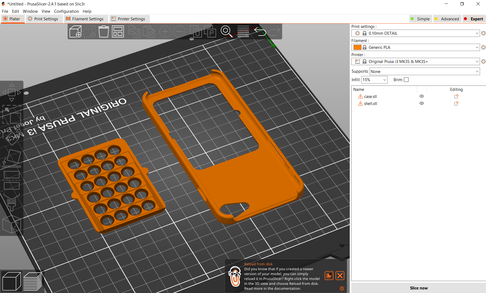
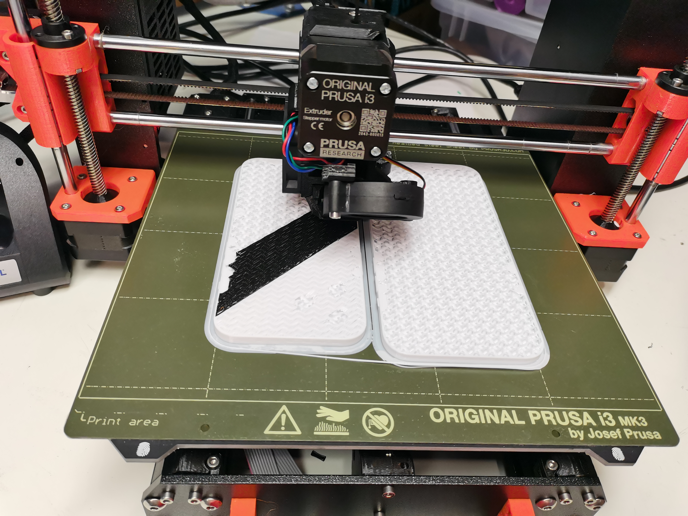
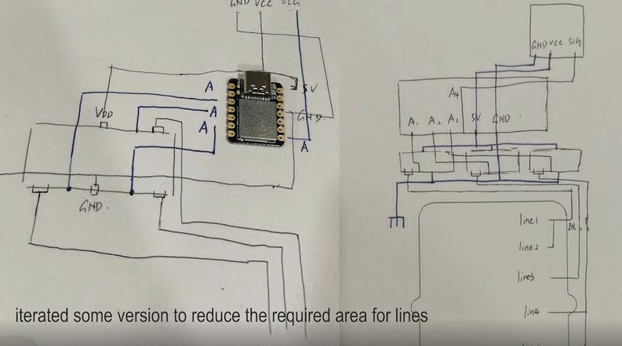
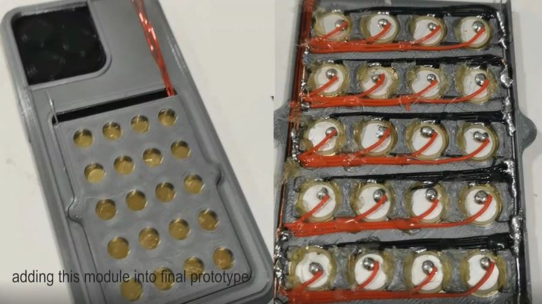
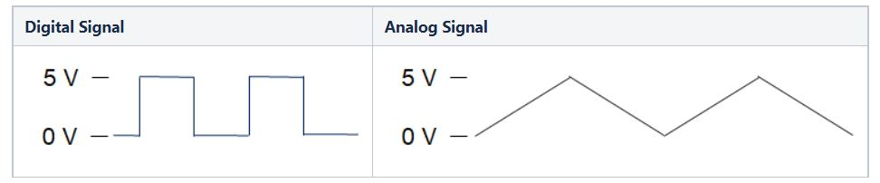
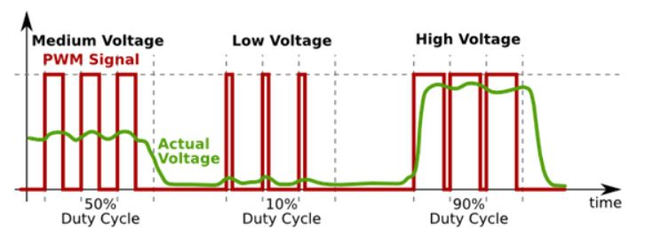

Haptic experience for smartphone-based remote chatting
Demo Presentation
Motivation
The act of smartphone-based voice chatting is an important element of many interpersonal activities, especially for people who have close relationships but do not live in the same physical space. However, The emotional atmosphere of the ecstasy moment in an intimate relationship is said to be tangible with the feeling of touch. Language is sometimes too pale to convey the inner feelings and the love towards the loved person. In this case, there is a missed opportunity to translate voice chatting into haptic experience, giving people a real sense of accompany.
Electronics
In this project, there are five main parts of electronics. 1) a micophone which is used to serve as input device to sense the sound in the voice chatting; 2) five line pizeo arrays which serves as output device to give people haptic experience; 3) an operational amplifier which is fundamentally a voltage amplifying device designed to be used with external feedback components; 4) a microcontroller and 5) a battery.

Microphone PCB Design
I used SVG-PCB to design the PCB for microphone in this final project. SVG-PCB is an in-browser editor lets users design Printed Circuit Boards (PCB) from a code description. Because I already tried this in Week5-Electronics Design, I feel comfortable to use this tool now. By referencing the PCB design in hello.mic.45, I started to design my own microphone PCB. Considering the small area in smartphone case, the main goal of this design is to reduce the size of the PCB. In this case, I tried to understand what is the smallest electronic unit to do what I want.

The next step is to use SVG-PCB to design the PCB that could be printed. When arranging, I also tried to make each part compact to reduce the area of the entire PCB.
Then I go the CBA lab, and would like to print it. The biggest issue I met in Week5-Electronics Design is that I don't know the doi of the png file. But with the experience I had last time, I quickly set up the doi to 1000 this time. But this time I ran into a new problem. After I started the machine, even though I started the command line, the machine still didn't connect. Ozgun helped me deal with that. And very unexpectedly, near the end, I encountered a small incident. When the printing was over, I tried vacuuming up the fine material that had been cut. But because the PCB was too small, the vacuum cleaner picked up my PCB. So I had to reprint it.
Operational Amplifier
I spent some time to learn operational amplifier in final project. An operational amplifier (op amp or opamp) is a DC-coupled high-gain electronic voltage amplifier with a differential input and, usually, a single-ended output. More details can be found in this video.
I chose to use TLV237x-Q1 550-µA/Channel, 3-MHz Rail-to-Rail Input and Output Operational Amplifiers. And here is the datasheet.

Piezoelectric Transducer
A piezoelectric transducer can be used either to transform an electric current to an acoustic pressure field or, the opposite, to produce an electric current from an acoustic field. These devices are generally useful for applications that require the generation of sound in air and liquids. Examples of such applications include phased array microphones, ultrasound equipment, inkjet droplet actuators, drug discovery, sonar transducers, bioimaging, and acousto-biotherapeutics. This example shows how to couple piezoelectric vibrations in a transducer to an acoustics pressure wave in a fluid such as air or water. The physics that are coupled and solved are piezoelectric stress-strain, an electric field, and pressure acoustics in a fluid.
Fabrication
The phone case is 3D printed, because the Pizeo part of the circuit is very dense, plus the pizeo circuit is lined up inside the phone case but the other circuit is lined up outside the phone case. In the design, I set the phone case into two parts, and the two parts are not completely close, leaving room for wires to go through.

In order to facilitate the test of form factor design, besides printing the mobile phone case, I also 3D printed the mobile phone to test the fit degree of the case. In the middle of printing, I ran out of PLA, so I changed the PLA to another color and continued printing.

Circuit
I spent a lot of time on the line because a lot of pizeo was used, but the area of the phone case was small and the area taken up by removing the electronics left very little area for the line. I kept trying to arrage lines on scratch paper. After iterating many times, I found a way to make it.


And here is the hardware demonstration.
Interface for Microphone Test
To test whether the microphone can sense the sound, I built a interface to visualize it. This interface visualizes a part of the functionality of the system (input device). The input sensors of this system are microphone, which can perceive the sound of the environment. When designing the interface, I regard the strength of signal received by the microphone as the trigger mechanism of button. To be specific, the "microphone button" is triggered when the perceived sound exceeds 350 decibels.
Software
The goal of the software is to control the vibration of the pizeo through changes in the sound signal. There are five rows of Pizeos on the hardware. The first two rows are controlled together, the middle row is controlled separately, and the last two rows are controlled together.
The difficulty of software part is the frequency adjustment of analog signal. Arduino does not generate true analog outputs. The instantaneous output is always 0V or 5V. To create (mimic) an analog signal, the Arduino uses a technique called Pulse Width Modulation (PWM). By varying the duty cycle, we can mimic an “average” analog voltage. But we cannot adjust the frequency directly. PWM Frequency in arduino is 490Hz.


Basic Principle of PWM
On-Time − Duration of time signal is high.
Off-Time − Duration of time signal is low.
Period − It is represented as the sum of on-time and off-time of PWM signal.
Duty Cycle − It is represented as the percentage of time signal that remains on during the period of the PWM signal.
Period- As shown in the figure, Ton denotes the on-time and Toff denotes the off-time of signal. Period is the sum of both on and off times and is calculated as shown in the following equation −
$$T{total} = T{on}+T_{off}$$
Duty Cycle- Duty cycle is calculated as the on-time of the period of time. Using the period calculated above, duty cycle is calculated as −
$$D = \frac{T{on}}{T{on}+T{off}} = \frac{T{on}}{T_{total}}$$
Frequency Changing of PWM Pins of Arduino
void setup()
{
pinMode(3,155);
TCCR2B = TCCR2B & B11111000 | B00000001; // for PWM frequency of 31372.55 Hz
}
void loop()
{
analogWrite(3,155);
TCCR2B = TCCR2B & B11111000 | B00000001; // for PWM frequency of 31372.55 Hz
}
After making the coding part ready, the system can work now! Let's watch the video.
Reflection
It was a great experience to take this class. I learned a lot and met a lot of interesting people. I am very grateful to TAs who helped me a lot on fabrication, especially the fabrication process which needs to use big machine.